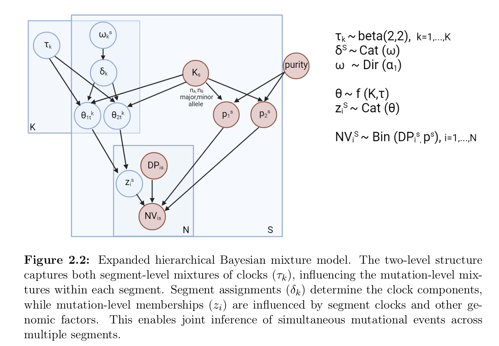

tickTack
tickTack.RmdOverview
tickTack requires in input a CNAqc object with attributes cna, mutations and metadata. The main input for the tool are: * the read counts from somatic mutations such as single-nucleotide variants (SNVs) in the mutation attribute; * allele-specific copy number segments (CNAs) for clonal segments must be encoded in the cna attribute; * a tumor purity estimate in the metadata.
The tool uses chromosome coordinates to map mutations to segments. The conversion of relative to absolute genome coordinates requires to fix a reference genome build; supported reference is GRCh38/hg17 that is also supported in CNAqc.
tickTack can be used to time the genomic segmnents affected by a Copy Number event, identifying the main clocks at which the event can be associated.
The following concepts are used to infer copy number timing.
VAF peaks
The point mutations that are present on the duplicated region are duplicated in copy with the segment. Therefore we can use the proportion of mutations happede before and after the Copy Number event distinguishing between mutations in single copy and double copies.

Therefore, for a single segment the value of the clock associated with the Copy Number event is obtained as a transformation from the proportions of mutations in single and double copy. The following quantities need to be considered:

In the case of a trisomy without LOH, we can consider the fact that, before , 1 chromosome will accumulate mutations that will duplicate, while the other will accumulate mutations that will remain in single copy. On the other hand, after , both chromosomes will accumulate mutations which will remain in single copy. Therefore one can write the system:
Using the first one to obtain and inserting into the second one, the solution for becomes:
$$\begin{equation} N_1 = N_2 + \frac{3N_2}{\tau}(1-\tau) \hspace{2mm} \rightarrow \hspace{2mm} N_1 + 2N_2 = \frac{3N_2}{\tau} \hspace{2mm} \rightarrow \hspace{2mm} \tau = \frac{3N_2}{N_1 + 2N_2} \end{equation}$$
The case of the CNLOH and of the segment doubling can be treated together. In fact, in the first case, before the mutations that will duplicate accumulate on a single chromosome and after the mutations that will remain in a single copy accumulate on two chromosomes. The system therefore becomes:
A very similar things happens in the case of the 2:2, with the only difference that the number of chromosomes accumulating a certain type of mutation will be double, both after and before . Hence, the system becomes:
Therefore, the two system can be solved similarly (you can simply drop a factor of 2 in the second case). The solution for easily becomes:
$$\begin{equation} N_1 = \frac{2N_2(1-\tau)}{\tau} \hspace{2mm} \rightarrow \hspace{2mm} \tau(N_1 + 2N_2) = 2N_2 \hspace{2mm} \rightarrow \hspace{2mm} \tau = \frac{2N_2}{2N_2 + N_1} \end{equation}$$
The model

Here we show an example of the model application on real data from the Pan-Cancer Analysis of Whole Genomes (PCAWG) cohort, specifically from a Renal Cell Carcinoma (Kidney-RCC) tumor type sample.
# Load template data
tickTack::pcawg_example_2
data <- pcawg_example_2
# library(tibble)
# library(dplyr)
tolerance <- 0.1
data <- tickTack::fit_h(data, max_attempts=2, INIT=TRUE, tolerance = tolerance, n_components = 0)
#> ℹ Adding segment with index 38 to segments included in the inference.
#> ℹ Adding segment with index 40 to segments included in the inference.
#> ℹ Adding segment with index 42 to segments included in the inference.
#> ℹ Adding segment with index 44 to segments included in the inference.
#> ℹ Adding segment with index 46 to segments included in the inference.
#> ℹ Adding segment with index 48 to segments included in the inference.
#> ℹ Adding segment with index 50 to segments included in the inference.
#> ℹ Adding segment with index 54 to segments included in the inference.
#> ℹ Adding segment with index 56 to segments included in the inference.
#> ℹ Adding segment with index 57 to segments included in the inference.
#> ℹ Adding segment with index 58 to segments included in the inference.
#> Attempt 1 of 2
#> ELBO for this run: -15339.5
#> Attempt 2 of 2
#> ELBO for this run: -15328.5
#> Attempt 1 of 2
#> ELBO for this run: -14986.6
#> Attempt 2 of 2
#> ELBO for this run: -15003.9
#> Attempt 1 of 2
#> ELBO for this run: -15007
#> Attempt 2 of 2
#> ELBO for this run: -15247.2
#> Attempt 1 of 2
#> ELBO for this run: -15021.6
#> Attempt 2 of 2
#> ELBO for this run: -15189
results <- data$results_timing
clock_assignment <- results$draws_and_summary[[3]]$summarized_results
input_data <- results$data$input_data
draws_and_summary <- results$draws_and_summary
log_lik_matrix_list <- results$log_lik_matrix_list
elbo_iterations <- results$elbo_iterations
results_model_selection <- model_selection_h(input_data, draws_and_summary, log_lik_matrix_list, elbo_iterations, n_components = 0)
best_K <- results_model_selection$best_K
model_selection_tibble <- results_model_selection$model_selection_tibble
entropy <- results_model_selection$entropy_list
p <- tickTack::plot_inference_h(results, best_K)
p